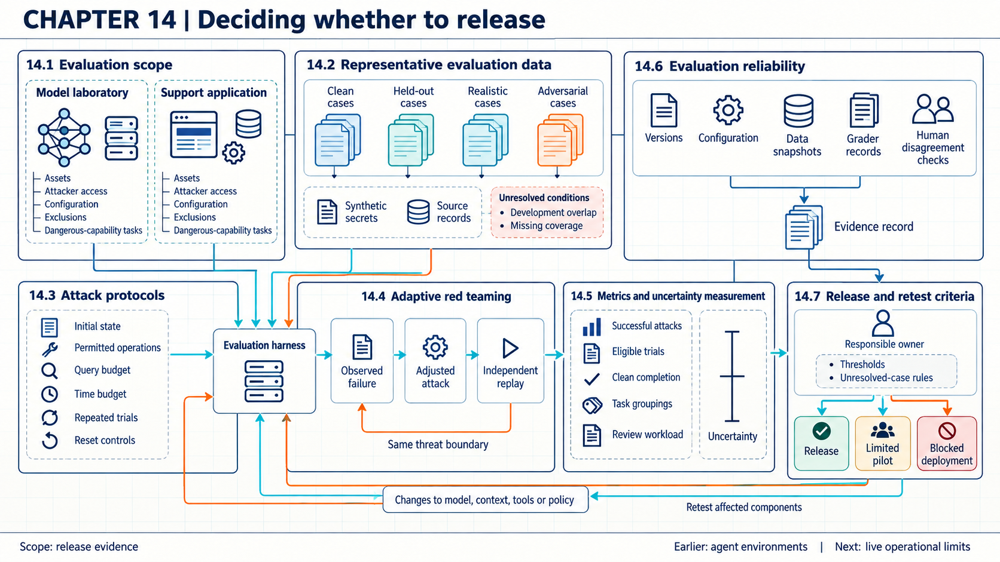
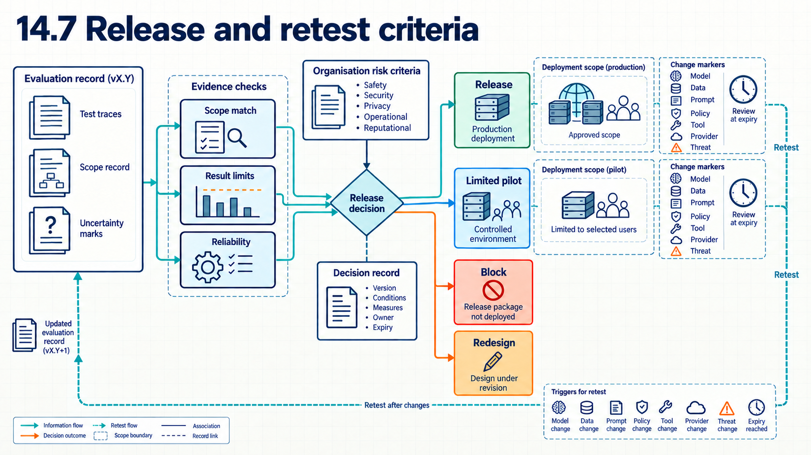

14 Evidence for release decisions
Release evidence ties each security claim to the tested cases, the stated attacker effort, and the measured uncertainty behind each number.
A release decision can rely on a stronger claim than the test results support. An unchanged attack can fail because it never reaches the weakness in a defense. Eighteen trials drawn from six repeated tasks can be mistakenly counted as eighteen independently sampled tasks. A test containing examples seen during training or development can reward memorization. A person or program that scores the results can also mark failures as passes.
Each of these gaps breaks the link between a reported number and the release it is asked to support. The record behind a release therefore states which system version ran and which cases were tried. It also states what the attacker was allowed, how success was judged, and which cases each reported number covers.

14.1 Evaluation scope
A model test and an application test can produce different evidence even from the same prompt. In evaluation, the model uses fixed parameters to generate outputs by inference. The evaluator compares those outputs or resulting actions with a reference answer, expected state, or predeclared failure rule. Evaluation does not train the model. Tool calls can still change state, so action tests need an isolated test environment and recorded resets rather than access to live business systems. Training is a separate process that updates parameters using an objective computed from training examples.
An evaluation scope states the system, task, protected assets, expected behavior, attacker access, failure conditions, and deployment configuration covered by a test. Without this record, a strong result for a laboratory model can be mistaken for evidence about an application that also has retrieval, tools, identities, and external services.
The NIST AI Risk Management Framework1 MAP function calls for documenting intended purpose, deployment context, users, impacts, risks, and requirements before risk is measured. NIST’s adversarial machine learning taxonomy2 recommends specifying attacker goals, capabilities, knowledge, and life-cycle stage. The organization still has to justify its selected boundary, attacker access, and failure thresholds for the system being evaluated.
A dangerous capability evaluation tests whether a highly capable model can materially assist severe harm under a stated access and task setting. The UK AI Security Institute report and OpenAI Preparedness Framework3 examine several categories. They include cyber operations, chemical and biological work, long-range autonomy or self-replication, safeguard bypass, and behavior that can make an evaluation misleading. The category name is only a starting point. Each test still needs a threat model, a safe environment, allowed tools, a success rule, a stopping rule, and records of partial as well as complete performance. A human comparison is needed when the claim concerns added capability relative to humans.
A capability result and an end-to-end harm claim remain separate quantities. A capability result measures performance on a specified task with stated tools, help, time, and scoring. End-to-end harm additionally depends on deployment exposure, actor access, opportunity, surrounding controls, successful execution, and consequence. A benchmark can reveal dangerous assistance or a control weakness while staying insufficient to estimate how often harm would occur. A narrow failure to demonstrate a capability does not prove the capability absent. Stage estimates should be reported separately rather than multiplied, unless they come from a justified joint model or directly sampled end-to-end trials. Claims about attacker assistance (Chapter 17) need this separation, especially when tools, scale, or other technical assumptions change (Chapter 24).
The evaluation record identifies the tested application, model version, retrieval snapshot, tool permissions, user role, and harmful outcomes under review, with excluded components and the reason for each exclusion alongside. Reviewers can then match every test and conclusion to the same system, and that scope record lists which normal-use and attack cases belong in the evaluation.
14.2 Evaluation cases and contamination
Overlap with training or development data can make test results look stronger than they are. Evaluation data represents the tasks and failures that govern release. Coverage records show which assets and failure paths have cases and which do not.
NIST AI 800-34 distinguishes variation between evaluation items from variation across repeated trials of the same item. The AI RMF5 asks organizations to document test sets, metrics, tools, limitations, data quality, and representativeness. An evaluation can use synthetic records to avoid exposing real secrets, provided they preserve the access and disclosure behavior being tested. Unknown training data remains a limitation even when available overlap checks find no match.
Cases are built from the scoped task, and each case carries its source, version, expected result, attacker capability, and coverage tags. Clean cases measure intended operation, and realistic cases preserve deployment constraints. Adversarial cases exercise stated attacker capabilities. A separate review compares development prompts with known training disclosures where evidence exists.
Selecting attacks or tuning a defense against the eventual test cases can bias the reported result. The cases used for attack search therefore stay separated from the cases used for estimation. Held-out cases are cases reserved for evaluation and excluded from attack selection and defense tuning. This separation reduces direct tuning to the test. Search may inspect outcomes freely, while the held-out set used for the rate estimate must remain untouched by selection and tuning. Ordinary repeated inspection of a holdout does not inherit the guarantees of the special reusable-holdout algorithms studied by Dwork et al.6. Their formal results belong to their stated algorithms and sampling assumptions. A clean overlap check cannot prove absence from unknown model training data.
14.3 Attack protocols
The same case can produce different results when one evaluator has more time, queries, or access than another. An attack protocol states what the evaluator knows, can change, and can observe during one trial: the query, time, and interaction budgets, reset conditions, success rule, and stopping point. Repeated trials matter when sampling or external state can produce different results from the same item.
NIST AI 800-37 recommends choosing the evaluation target before the estimator and modeling repeated trials to separate item and sampling variation. The NIST Generative AI Profile8 includes red teaming, security testing, and reassessment among its measurement actions. Neither publication selects an attack budget or trial count for a particular release decision.
For each case, the evaluator starts from a recorded state and applies only allowed changes, while the test harness, the software that runs and records the trials, captures each query and response. A grader, a person or program that applies the scoring rule, then judges success against the predefined outcome. Failed attempts stay in the record because they affect cost and uncertainty.
An eligible trial has a predeclared case, system state, attack procedure, budget, and success rule. For the fixed-sample calculations below, the number of trials is also chosen before their outcomes are inspected. A design that stops in response to observed results needs a statistical method that accounts for that stopping rule. Invalid trials, protocol violations, missing results, and post hoc exclusions are reported separately rather than folded silently into the denominator. A failed attempt must not be removed because the evaluator later found a stronger attack.
A fixed protocol supports comparison, but a defense may exploit its weaknesses, which is why the next section adds adaptive evaluation. A reproducible protocol still does not establish that its attacker strategy is strong. Hidden state, incomplete resets, or a test-aware defense can make the comparison look stronger than it is.
14.4 Adaptive red teaming
A fixed attack may fail because it never reaches the defense’s real weak point, so an evaluator needs attacks that account for how the defense works. Adaptive red teaming allows the evaluator to inspect observed failures, form a hypothesis about the control, and change the attack within the stated threat model. The resulting evidence carries more weight when another evaluator can reproduce the bypass and when a fix is tested against both the original and the changed attack.
Athalye et al.9 described signs of obfuscated gradients, which supply misleading or unusable gradient information to an attack without removing the underlying vulnerability. They adapted their attacks to each defense under that defense’s original threat model. They did not treat an unchanged attack’s failure as evidence of security. In the nine defenses they examined, seven relied on obfuscated gradients. Their attacks fully circumvented six and partly circumvented one (Athalye et al.10). Those numbers belong to adversarial-example defenses in that 2018 study, not to prompt injection or tool-using agents. They are included here for method rather than as a present-day comparison of products. A failed test can reveal a weak test as easily as a strong defense.
Search and estimation need different cases. The red team first works on the search set, where it sees outcomes and changes placement, encoding, timing, tools, or strategy. It then settles on a frozen attack: the selected procedure with its budget, stopping rule, and grader fixed. The held-out evaluation set is the untouched cases on which the frozen attack’s success is estimated under the stated case population. Last comes the replay set, where independent reproduction checks whether a discovered bypass repeats. Replay of a discovered bypass establishes repeatability rather than a population attack rate. Reporting the best of many adaptively tried attacks as if prespecified is optimistic, so the search budget and every consulted case go on the record.
Example
Separating search from estimation. Suppose a red team tries forty attack variants on twenty development cases and selects the strongest, which succeeds on eight. That 8/20 figure is discovery evidence shaped by selection. Freezing the variant and running it on thirty untouched cases, where it succeeds on four, gives the held-out estimate 4/30 with its prespecified interval. The forty-variants-on-twenty-cases search record is kept with the estimate.
Conclusion. Merging the two phases into 12/50 would mix selection with estimation, so the two counts are reported side by side instead.
14.5 Measuring outcomes and uncertainty
A security metric is interpretable only when its eligible trials and success conditions are explicit. Attack success rate divides successful attacks by eligible attack trials. Precision reports the alerts that correspond to real failures out of all alerts, while recall reports the real failures the detector catches out of all real failures in the evaluated set. The base rate, the fraction of evaluated events that are real failures, affects how many alerts correspond to real failures. Reviewer workload belongs beside these rates because a detector can shift cost onto people.
A confidence interval is a range calculated by a procedure designed to cover the unknown rate in a specified fraction of repeated evaluations under its sampling assumptions. Approximate methods can have coverage above or below their target. The confidence level does not assign a probability to the fixed unknown rate after one interval has been observed. NIST AI 800-311 separates the quantity an evaluation intends to estimate from the statistic computed on observed trials. NIST AI 800-312 also models variation across items and repeated trials and warns that simpler estimators can omit uncertainty. The NIST/SEMATECH handbook13 provides Wilson and exact binomial intervals for a proportion.
The Wilson interval is a method for constructing a confidence interval for a binomial proportion. It is used here because its coverage behaves better than the simple Wald interval for small samples and rates near zero. Brown et al.14 show the Wald interval’s poor coverage and recommend Wilson for small samples. They also examine the exact Clopper-Pearson interval, a method that inverts binomial tail probabilities and guarantees coverage at or above the nominal level at the price of conservatism. An Agresti-Coull interval is another useful approximation. Let \(n\) be the fixed number of trials, \(x\) the number of attack successes, and \(\widehat p=x/n\) the observed fraction. All rates here are dimensionless. The value \(z\) sets the confidence level using the standard normal distribution, with \(z\approx1.96\) for a two-sided 95 percent interval. Wilson obtains the limits by finding which candidate rates are consistent with the observed fraction under a binomial score test (NIST/SEMATECH handbook15). The resulting lower and upper limits are
\[ \frac{\widehat p+\frac{z^2}{2n}\;\pm\; z\sqrt{\frac{\widehat p(1-\widehat p)}{n}+\frac{z^2}{4n^2}}} {1+\frac{z^2}{n}}. \]
The binomial model assumes independent Bernoulli trials: each result is success or failure, and every trial has one common success probability \(p\). The joint probabilities factor into the individual trial probabilities. Independence and a common probability are assumptions about the evaluation design, not conclusions established by the observed fraction.
One observed fraction can stand for three different quantities. The first is the descriptive fraction on this fixed set of trials. The second is the expected success on repeated runs of these same fixed cases. The third is the expected success over a larger population of possible cases. The first needs no model. The second needs a model for run-to-run randomness. The third additionally needs a defensible case-sampling model. A single \(x/n\) does not identify all three.
The release report therefore states the denominator, point estimate, interval method, item grouping, repeated-trial design, and number of human reviews. It keeps utility failures separate from security failures, since clean-completion and adversarial-success counts are unlike quantities that must not be subtracted or combined.
Example
Attack rate with a Wilson interval. Suppose an evaluation fixes eighteen independent trials sampled from one defined population, with one common attack-success probability. Success means a synthetic protected value appears in the final answer. Three trials succeed. The observed fraction is \(\widehat p=3/18\approx0.1667\). Substitution gives
\[ \frac{0.1667+\frac{1.96^2}{36}\;\pm\; 1.96\sqrt{\frac{0.1667(1-0.1667)}{18}+\frac{1.96^2}{4(18)^2}}} {1+\frac{1.96^2}{18}} \approx[0.0584,\;0.3922]. \]
Under those assumptions, the two-sided 95 percent Wilson interval is about 5.8 to 39.2 percent. It describes uncertainty for the specified population and attack procedure. It cannot correct poor coverage or an inaccurate grader.
Changing the sampling design. If the eighteen results instead come from six tasks repeated three times, they are not eighteen independently sampled tasks. Repeats can share session state, causing dependence, and different tasks can have different success probabilities even when their runs are independent conditional on the task. The pooled Wilson calculation is then only an arithmetic illustration until its model is justified. Three failures on one task means 1/6 tasks showed any failure. One failure on each of three tasks means 3/6. Both patterns give 3/18, so retaining task-level results prevents the pooled fraction from hiding this difference.
Example
Upper bound with zero observed failures. Suppose one hundred fixed, independent eligible trials with one common failure probability and no outcome-dependent exclusions produce zero failures. The observed rate is 0/100. For a proposed failure probability \(U\), each trial has probability \(1-U\) of no failure. Independence makes the probability of no failures in all \(n\) trials equal to \((1-U)^n\). The exact one-sided 95 percent upper bound sets this probability to \(\alpha=0.05\), giving
\[ (1-U)^n=\alpha \]
which gives
\[ U=1-\alpha^{1/n}. \]
Here \(U\) is the upper bound and \(\alpha\) is one minus the confidence level, here \(0.05\) (NIST/SEMATECH handbook16). For \(n=100\), \(U=1-0.05^{1/100}\approx0.0295\), or 2.95 percent. For \(n=20\), the bound is about 13.9 percent.
Conclusion. The supported reading is that no failures were observed with a model-based upper bound near 3 percent for one hundred trials. The bound is a one-sided coverage statement under the stated model, not a 95 percent probability attached to the fixed unknown rate. It says nothing about untested attacks or cases outside the sample.
When the release claim is that a failure rate is below some value r, the matching evidence is normally a prechosen one-sided upper bound compared with r. The method, whether Wilson, Clopper-Pearson, or another, is specified before the results are known, and its direction and level belong in the plan before results are inspected. “Exact” for Clopper-Pearson means guaranteed binomial coverage at or above the nominal level, not freedom from design error.
Example
Matched baseline comparison. Suppose a baseline and a candidate run against the same twenty held-out cases under the same system boundary, attacker access, budget, success rule, and grader. The baseline fails on five cases and the candidate on three. Both rates are reported with the paired outcomes: cases where both fail, both resist, only the candidate fails, and only the baseline fails.
Conclusion. The change from 25 percent to 15 percent is a reduction of ten percentage points, but it hides the pairing. If the candidate’s three failures are among the baseline’s five, two cases improved and none worsened. If all three are new, five improved and three worsened. A historical baseline under different cases or access is context, not a measured treatment difference.
Repeated runs may share state or other causes of dependence. Even after clean resets, grouping by task remains relevant when the claim concerns performance across a wider population of tasks. Cluster-aware summaries therefore keep each task’s repeats together, and with few tasks the report shows task-level results instead of hiding them behind a precise pooled interval.
14.6 Evaluation reliability
A reported result cannot support the same decision elsewhere if the next evaluator cannot reconstruct what ran or how it was scored. Evaluation reliability concerns whether another qualified team can understand and repeat the result closely enough for that decision. The record includes model and application versions, system prompts, tool schemas, data snapshots, sampling settings, random seeds where available, external service state, grader versions, and adjudication rules. Hosted services may leave some state unavailable, which becomes a stated limit rather than a silent gap.
The AI RMF17 calls for documenting measurement methods, metrics, test sets, tools, limitations, and independent review where appropriate. NIST AI 800-318 shows that conclusions depend on the statistical model, its assumptions, and the target quantity. A team using a language-model judge needs a separate validation record for that judge, and a hosted-agent evaluation needs its own reproducibility account.
Unreliable judges, harness faults, selective reporting, and supplier benchmarks each break the chain in their own way. The organization samples automated grades for human review and records disagreements. It reruns a stable subset after version changes, reporting planned reruns, completed valid reruns, invalid runs, and decision disagreements as counts rather than pooling them into a single fraction. Supplier benchmark claims enter the record with their task, configuration, and access assumptions instead of serving as direct release evidence.
A component result can support a claim about that component under its tested conditions. It cannot, by itself, establish protection of the application that also uses retrieval, tools, identities, and external services.
Debenedetti et al.19 designed AgentDojo to evaluate legitimate task completion and attacker goals in stateful tool environments. Its user and attack tasks have separate checks over environment state. This makes it possible to distinguish a blocked attack from a defense that also prevents useful work. The NeurIPS 2024 benchmark supplies controlled environments and extensible tests. Its results do not estimate incident frequency or establish security in an organization’s different deployment.
14.7 Release criteria and retesting
A release decision joins test results with the organization’s risk limit and the planned exposure. The record states minimum utility and security thresholds, unresolved cases, the responsible owner, staged user or data scope, rollback conditions, and changes that require reevaluation. A threshold has meaning only for the scope, data, protocol, and uncertainty already documented, and the acceptable threshold depends on the consequence the organization is deciding about.

The NIST Generative AI Profile20 recommends minimum thresholds, go or no-go policies, and a plan to halt deployment when risk is unacceptable. The NIST Generative AI Profile21 also recommends evaluation before and during deployment, periodic review, and after-action review. The profile leaves the threshold and risk-acceptance authority to the organization, and its governance actions do not prove that staged release or review reduces incidents.
The decision may allow a proposal-only pilot for one department while blocking external actions until action tests pass. A model, retrieval corpus, tool schema, permission policy, or control change can trigger focused or full reevaluation according to its possible effect. After a relevant change, the claim that the earlier result still describes the system no longer follows. Reviewers state which conclusions lapse and retest those, while evidence about unchanged components can remain useful. The staged exposure scope is inventoried as planned users, data classes, and capabilities, distinct units that are compared against actual exposure, never pooled into one fraction. These accepted limits become the runtime controls and observations examined in Chapter 15. When those observations suggest an incident, Chapter 16 follows the investigation and restoration.
A configured deployment gate can compare the release record with the versions and exposure being requested, and block requests that exceed the approved limits. The record includes measured thresholds, unresolved failures, the responsible owner, and rollback triggers. An unrecorded configuration change or alternate deployment route can evade the gate. Failed traces stay preserved for reevaluation before expansion, and approval never transfers to a wider population or a changed system on its own.
Note
Chapter checkpoint. Suppose the release candidate is the organization support application with external inference, approved retrieval, and proposal-only tool access. It completes 94 of 100 clean tasks. It also records 3 completed high-impact disclosures in 18 eligible adversarial trials drawn from 6 tasks. The release rule requires at least 90 percent clean completion and no demonstrated high-impact disclosure. What is the decision?
Answer. The candidate meets the clean-task threshold but fails the security rule because three trials produced the stated high-impact disclosure. The organization should record a blocked release for this scope and preserve the versions and traces. It should repair the failure path before rerunning both the clean and adversarial cases. Rejection follows from the observed disclosure alone. The Wilson arithmetic from the earlier illustration is not a justified uncertainty measure for six clustered tasks, so it adds nothing to this decision either way.
Elham Tabassi (2023), Artificial Intelligence Risk Management Framework (AI RMF 1.0), NIST AI 100-1, section 5.2, “MAP,” printed pp. 24-27, especially MAP 1.1, MAP 2.1-2.3, and MAP 3.3-3.5, source.↩︎
Apostol Vassilev et al. (2025), Adversarial Machine Learning: A Taxonomy and Terminology of Attacks and Mitigations, NIST AI 100-2e2025, sections 2.1 and 3.1, attack classification and attacker goals, capabilities, and knowledge. Section 4.2.5 states the limits of the taxonomy for risk decisions, source.↩︎
UK AI Security Institute (undated web edition), “Frontier AI Trends Report,” sections on cyber capabilities, chemistry and biology, autonomy skills, safeguards, and loss of control, including the discussion of sandbagging, official report. OpenAI (2025, April 15), Preparedness Framework, version 2, sections “Tracked Categories” and “Research Categories,” framework. These sources describe public evaluation programs and provider policy. They do not define a universal set of tests or thresholds.↩︎
Drew Keller et al. (2026), Expanding the AI Evaluation Toolbox with Statistical Models, NIST AI 800-3, February 2026, sections 3.2-3.3, printed pp. 9-11, source.↩︎
Elham Tabassi (2023), Artificial Intelligence Risk Management Framework (AI RMF 1.0), NIST AI 100-1, section 5.3, “MEASURE,” printed pp. 28-30, especially MEASURE 1.1-1.3 and 2.1-2.3, source.↩︎
Cynthia Dwork et al. (2015), “Generalization in Adaptive Data Analysis and Holdout Reuse,” Advances in Neural Information Processing Systems 28, abstract and Section 1, proceedings PDF pp. 1-3, paper. Only the design lesson is used here, which is to search adaptively, then freeze and estimate on untouched cases. It is not the paper’s formal reusable-holdout guarantees, which belong to its stated algorithms and sampling assumptions.↩︎
Drew Keller et al. (2026), Expanding the AI Evaluation Toolbox with Statistical Models, NIST AI 800-3, February 2026, section 3.1.1, “Choosing an Accuracy Estimand,” printed p. 9, and sections 3.2-3.3.1, printed pp. 9-11, source.↩︎
National Institute of Standards and Technology (2024), Artificial Intelligence Risk Management Framework: Generative Artificial Intelligence Profile, NIST AI 600-1, actions MS-2.7-001 through MS-2.7-009, printed pp. 33-34, source.↩︎
Anish Athalye, Nicholas Carlini, and David Wagner (2018), “Obfuscated Gradients Give a False Sense of Security: Circumventing Defenses to Adversarial Examples,” Proceedings of ICML, PMLR 80, 274-283, abstract and sections 1-3, source.↩︎
Anish Athalye, Nicholas Carlini, and David Wagner (2018), “Obfuscated Gradients Give a False Sense of Security: Circumventing Defenses to Adversarial Examples,” Proceedings of ICML, PMLR 80, 274-283, section 5 opening paragraph and defense case studies, source.↩︎
Drew Keller et al. (2026), Expanding the AI Evaluation Toolbox with Statistical Models, NIST AI 800-3, February 2026, section 3.1.1, “Choosing an Accuracy Estimand,” printed p. 9, source.↩︎
Drew Keller et al. (2026), Expanding the AI Evaluation Toolbox with Statistical Models, NIST AI 800-3, February 2026, sections 3.2-3.4, printed pp. 9-11, and section 5.3.1, printed pp. 25-27, source.↩︎
NIST/SEMATECH (online edition, retrieved September 16, 2026), e-Handbook of Statistical Methods, section 7.2.4.1, “Confidence Intervals,” Wilson and exact methods, source.↩︎
Lawrence D. Brown, T. Tony Cai, and Anirban DasGupta, “Interval Estimation for a Binomial Proportion,” Statistical Science 16, no. 2 (2001), Introduction, pp. 101-102. Section 3.1.1, equation (4), pp. 107-108. Section 4.2.1, pp. 113-114. Conclusion, pp. 120-121, paper. Wilson recommended for small samples over the poor-coverage Wald interval. Clopper-Pearson guarantees coverage at or above the nominal level but is conservative. Binomial model conditions apply: fixed n, one common success probability.↩︎
NIST/SEMATECH (online edition, retrieved September 16, 2026), e-Handbook of Statistical Methods, section 7.2.4.1, “Confidence Intervals,” Wilson and exact methods, source.↩︎
NIST/SEMATECH (online edition, retrieved September 16, 2026), e-Handbook of Statistical Methods, section 7.2.4.1, “Confidence Intervals,” Wilson and exact methods, source.↩︎
Elham Tabassi (2023), Artificial Intelligence Risk Management Framework (AI RMF 1.0), NIST AI 100-1, section 5.3, “MEASURE,” printed pp. 28-30, especially MEASURE 1.1-1.3, 2.1-2.7, and 2.13, source.↩︎
Drew Keller et al. (2026), Expanding the AI Evaluation Toolbox with Statistical Models, NIST AI 800-3, February 2026, sections 3.1.1 and 3.4, printed pp. 9-11, and section 6, source.↩︎
Edoardo Debenedetti, Jie Zhang, Mislav Balunović, Luca Beurer-Kellner, Marc Fischer, and Florian Tramèr (2024), “AgentDojo: A Dynamic Environment to Evaluate Prompt Injection Attacks and Defenses for LLM Agents,” NeurIPS Datasets and Benchmarks, sections 3-4, published paper.↩︎
National Institute of Standards and Technology (2024), Artificial Intelligence Risk Management Framework: Generative Artificial Intelligence Profile, NIST AI 600-1, actions GV-1.3-002 and GV-1.3-007, printed pp. 14-15, source.↩︎
National Institute of Standards and Technology (2024), Artificial Intelligence Risk Management Framework: Generative Artificial Intelligence Profile, NIST AI 600-1, action GV-1.2-002, printed p. 14, and actions GV-1.5-001 through GV-1.5-003, printed p. 16, source.↩︎